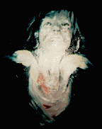

Jonathan Goldstein
Jonathan GoldsteinUntitled
Jonathan Goldstein

1
it has my heart
become unfetid & slam
dance thru hoops of magnificent
snake silent
to my battle cry
I move thru early morning w/
streamers that are fire
of blood & marrow
it streaks out of my hair
in wires of blue sun
& I am not eyeballing the moon
but your face
outlandish goyishe punnim
but to me, it has the animal guts
of my grandfather's baked apple
leather kisser so
it has to be love
that has flooded my eyes
so that they are
rosy muddy windshields of
Coney Island aquarium dolphin
tank mist &
my chest is taking wallops from
glotted smuck
open handed wet
fists
& you cannot stop them
from rolling down your cheeks
& thighs
they come like
field mice w/ a purpose
(it would seem)
w/ vengeance
up my nose
up my pant legs
up the hollow tubes of
my fake laughs & shrugs
& like hard sugar rock candy
they splutter:
broken roller coaster tractor motors
they stutter
rusted out of my eyes
in tears that are genuine:
chrystle swan necks all
twisted in the gutter
of my lap & laundry
my dress shirt is all soaked
in a hunch back woolen cap
sweat, so ridilulous in your garden
& this dull fog horn in my head
only I can taste
in the back of my mouth
it pushes out the ever-
shrinking ever-
evolving colours of
perfect gob-
stoppers
like your smile:
it blows toward me
a parasol spearing
into the beach
when all I want to do
is offer you something
perfect like
a vanilla biscuit
or a poem w/ lines of
10 syllables but
all I ever come up w/
is many hinged & wired unmatched
bloody things:
watches that won't keep time
'cause one foot has the gout
& flowers with sweaty
pasted on petals--
dalmation dogs I tried
w/ love
to give measles
my kisses are picked scabs
my sweet talk is hollered
from the toilet stall
I tried w/ bony arms &
lemmox head to thud love
onto the matress where you lay
2
I would pull you out of the opera
promissing tangerines
of baby toes
made of real fire & the fire
is your soul which refused to burn
refused to die before it was spit
into your tomatoe guts
body & left to roam it
an insomniac
3
If you got angry
I would fall to my knees
they would crack &
I would burn hoarse staticky unmusical
my eyes
just cracked oil paint
rolling jack
pot cherries
toward inside
where the ashtray landscape houses
one more bird who squeeps
out your name because
it knows how to suck up the sunrise
onto its feet to sand dance
in the L.A. summer heat
for one more day.
|